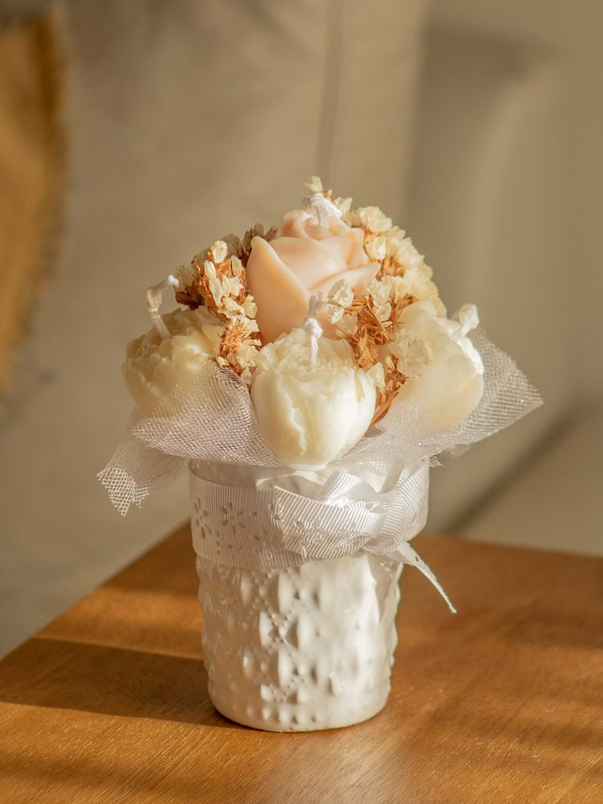
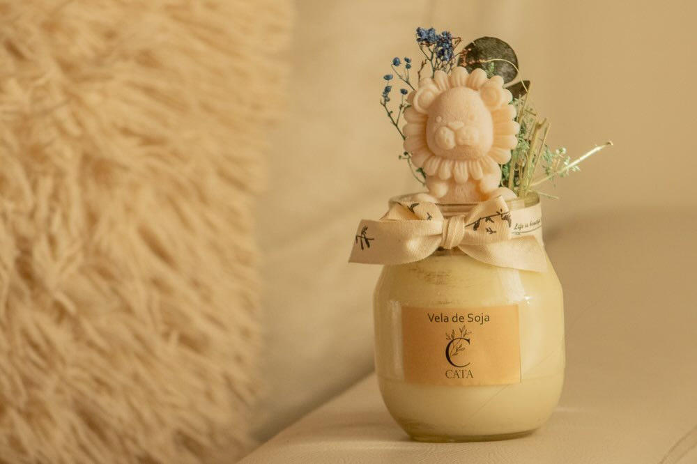
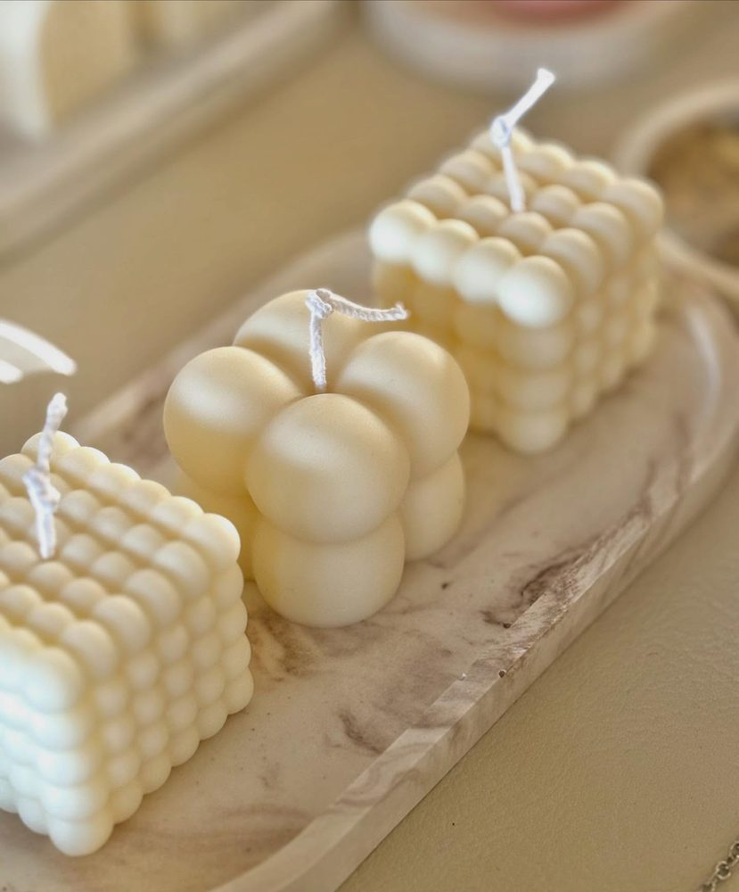
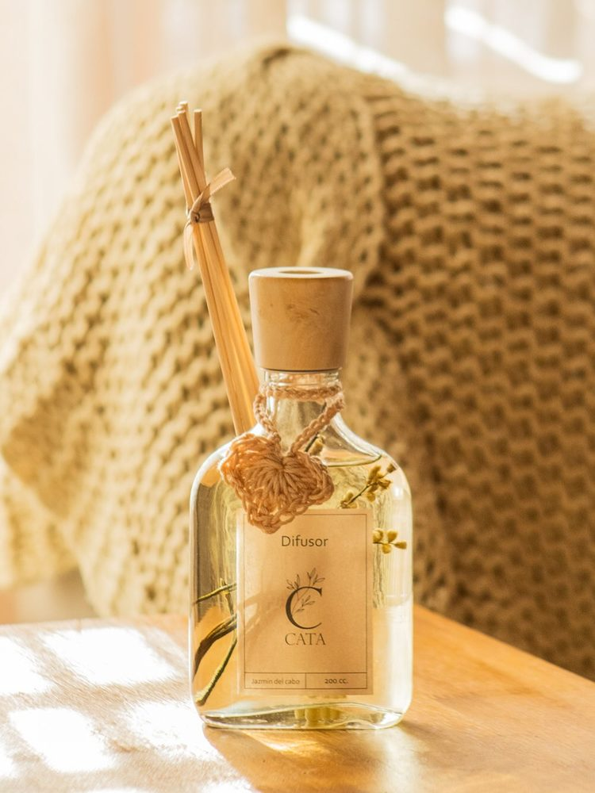
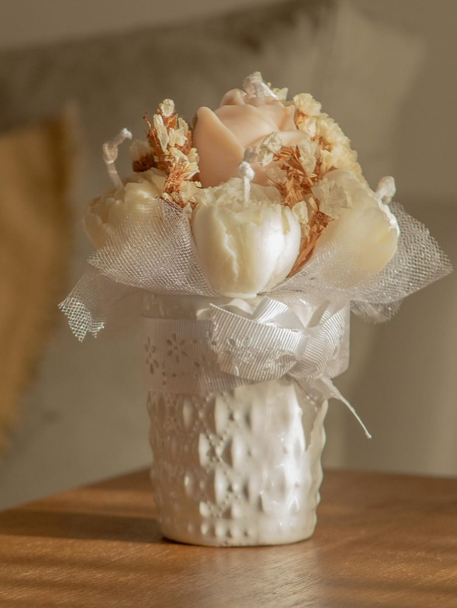
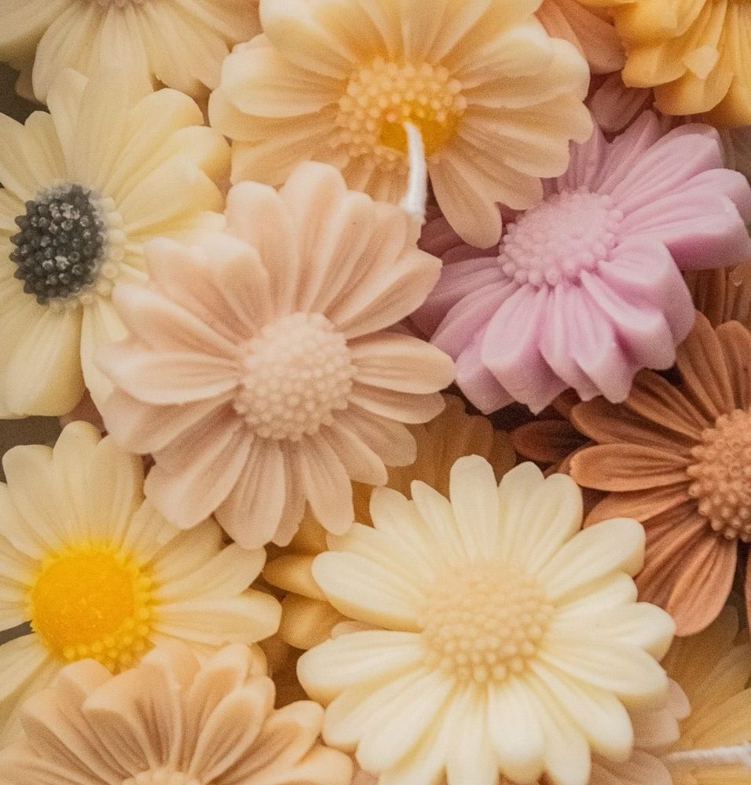
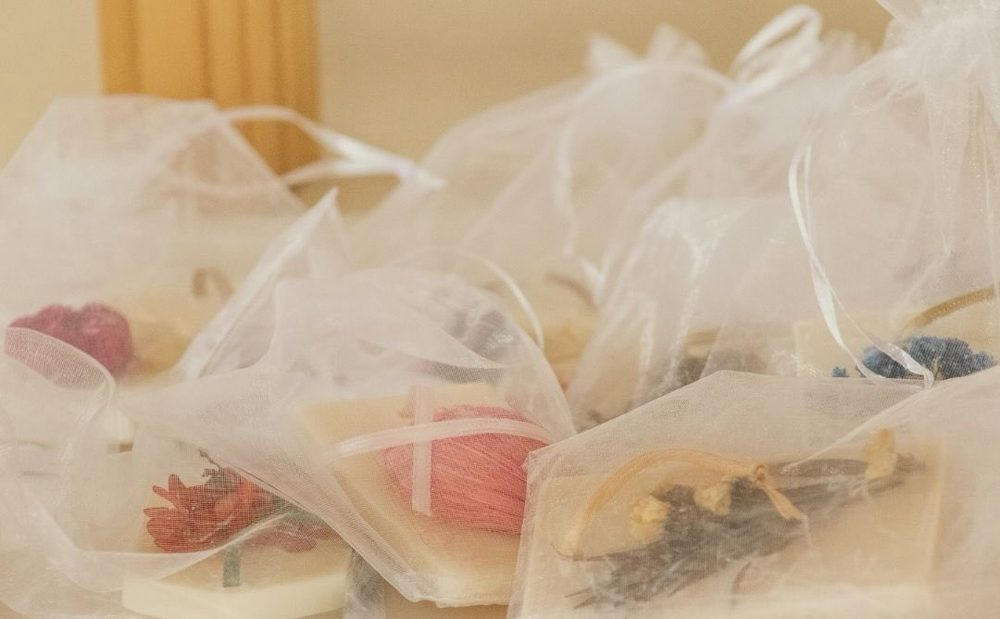
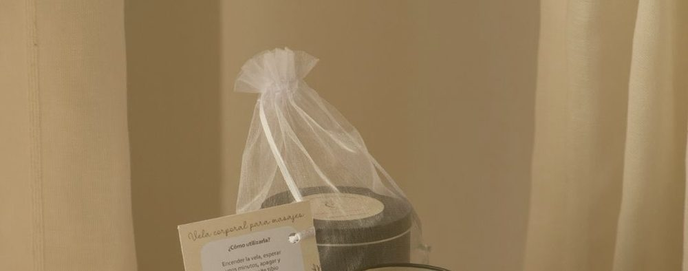
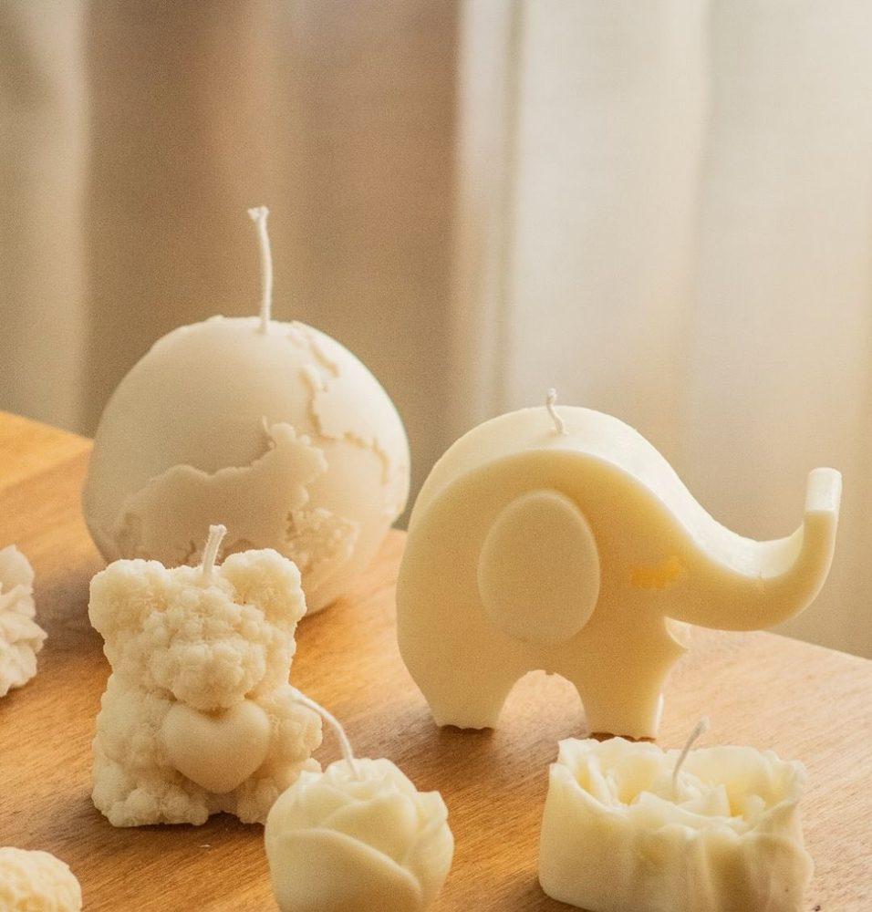
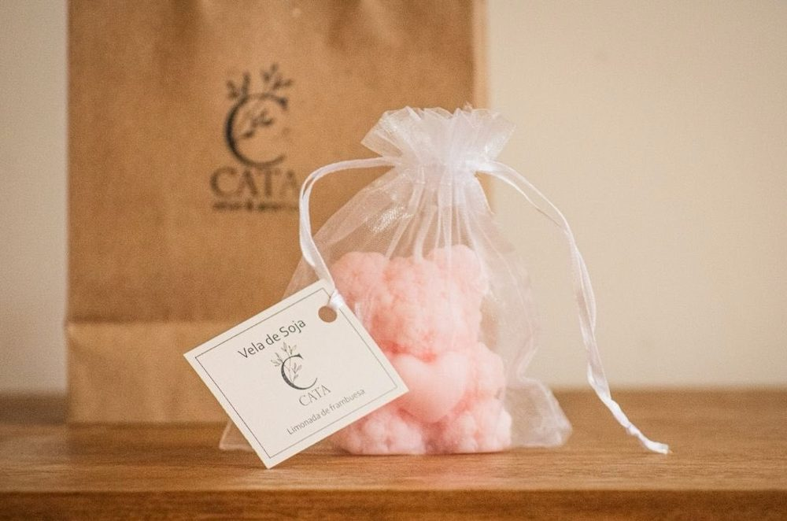

Hecho a mano y con amor
Velas y aromas para tu hogar
Velas de cera de soja, difusores, home sprays y regalos para cada momento. Hechos a mano en Azul.

Nuestros productos
Aromas suaves, cera de soja y detalles pensados para regalar o regalarte.

Velas aromáticas
De cera de soja, en frascos y vasos con mucho cuidado en los detalles.

Velas de molde
Rosas, burbujas y figuras para decorar y regalar.

Difusores
Varillas y flores secas, con distintos frascos y aromas.

Ramos de velas
Peonías y rosas de cera con flores secas, para regalar.

Flores de cera
Margaritas y flores en tonos suaves, una por una.

Souvenirs
Plaquitas aromáticas y velitas para eventos y agradecimientos.

Velas para masajes
Se enciende, se apaga y se aplica el aceite tibio sobre la piel.

Figuras tiernas
Elefantes, ositos, gatitos y más, para sorprender.
Navidad
Arbolitos y figuras para decorar y regalar en las fiestas.
También hay home sprays y objetos para el hogar. Preguntanos por los aromas disponibles.

Souvenirs y regalos para eventos
Un detalle hecho a mano para cada invitado
Velitas, plaquitas aromáticas y sachets, con bolsita y tarjeta de la marca. Para comuniones, bautismos, cumpleaños, casamientos y agradecimientos.
Contanos la fecha y la cantidad, y te armamos una propuesta.
Consultar por souvenirsDónde encontrarnos
Nuestros aromas y objetos te esperan en dos lugares muy lindos. También hay showroom con cita previa.
Azul
Mariliz
Av. 25 de Mayo 722
Lunes a viernes: 9:30 a 12:00 y 16:30 a 20:00
Sábados: 9:00 a 20:00
Velas, difusores, home sprays y objetos para el hogar.
Cómo llegarTandil
En Boulanger · Patio Serrano
Israel y Don Bosco
Un espacio de arte, diseño y producción local. Podés recorrerlo, sentir los aromas y tomar algo al paso.
Cómo llegarCómo comprar
Simple y personal, como todo lo que hacemos.
Elegí
Mirá los productos y contanos qué te gustó.
Escribinos
Por WhatsApp te asesoramos y confirmamos todo.
Visitanos
Pasá por Mariliz (Azul) o Patio Serrano (Tandil), o pedí cita para el showroom.
¿Buscás un regalo especial?
Escribinos y te ayudamos a elegir el aroma ideal.
Escribinos por WhatsApp @cata.velasyaromas en Instagram